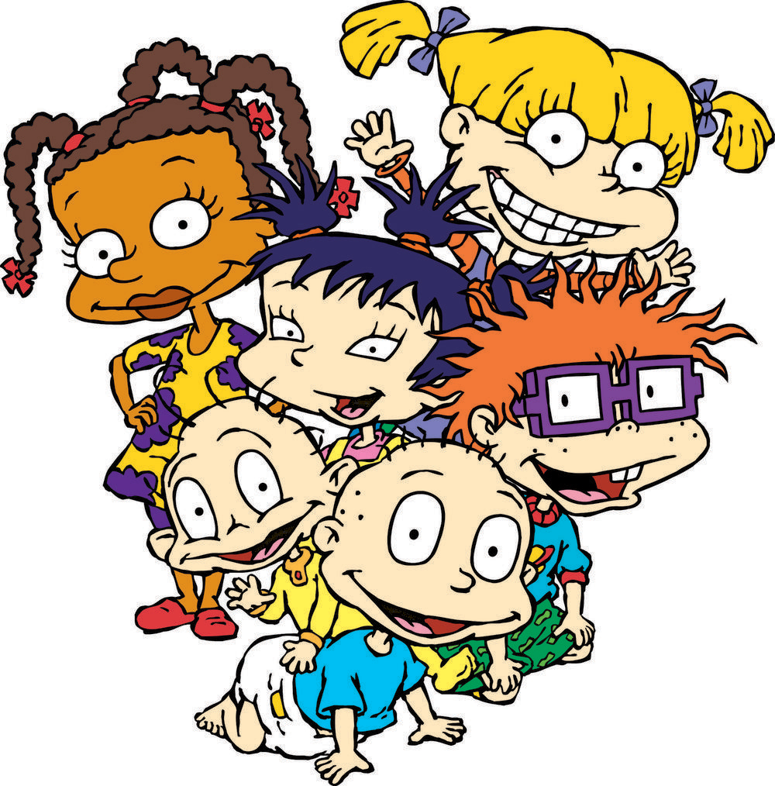

About Angelica
Angelica is the sassy one of the bunch. She is the oldest of the Rugrats and likes to act like she's in charge of all the kiddos.
The Rugrats
Angelica's Characteristics
- She has pigtails
- She's bossy
- Cynthia is her favorite doll (& she's a really cool dancer)
Angelica's Friends
Angelica has some great friends. Susie is her best friend (she's the nicest). Click on the links below to read more about them.